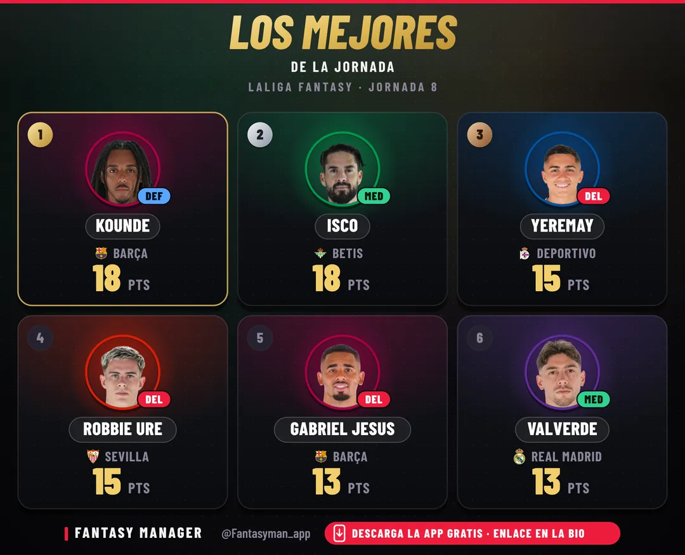

Resumen de la jornada 8
Del viernes 9 de octubre al lunes 12 de octubre · puntos oficiales con los de DAZN, a jueves 26 de noviembre a las 00:47
Falta un partido, aplazado: Rayo-Athletic (miércoles 9 de diciembre). Aquí va lo de los 9 que se han jugado; cuando se juegue, este resumen se pone al día con sus puntos.
Los mejores de la jornada
| # | Jugador | Pts | Media |
|---|---|---|---|
| 1 | 18 | 6,6 | |
| 2 | 18 | 4 | |
| 3 | 15 | 4,9 | |
| 4 | 15 | 2,6 | |
| 5 | 13 | 6 | |
| 6 | 13 | 4,1 | |
| 7 | 12 | 8,5 | |
| 8 | 12 | 7,3 | |
| 9 | 12 | 6,4 | |
| 10 | 12 | 6,1 |
Once ideal de la jornada 8
Lo que ya se jugó, no una recomendación. Cómo se elige.

Resultados y MVP de cada partido
 Málaga1-1Espanyol
Málaga1-1Espanyol vie 9, 21:00
vie 9, 21:00 MVP: Bryan 12
MVP: Bryan 12 Alavés1-2Atlético
Alavés1-2Atlético sáb 10, 16:15
sáb 10, 16:15 MVP: Grimaldo 12
MVP: Grimaldo 12 Barça3-0Getafe
Barça3-0Getafe sáb 10, 18:30
sáb 10, 18:30 MVP: Kounde 18
MVP: Kounde 18 Real Madrid1-0Villarreal
Real Madrid1-0Villarreal sáb 10, 21:00
sáb 10, 21:00 MVP: Valverde 13
MVP: Valverde 13 Elche0-0Celta
Elche0-0Celta dom 11, 14:00
dom 11, 14:00 MVP: Ionut Radu 11
MVP: Ionut Radu 11 Real Sociedad3-2Deportivo
Real Sociedad3-2Deportivo dom 11, 16:15
dom 11, 16:15 MVP: Yeremay 15
MVP: Yeremay 15 Betis5-2Osasuna
Betis5-2Osasuna dom 11, 18:30
dom 11, 18:30 MVP: Isco 18
MVP: Isco 18 Racing2-2Valencia
Racing2-2Valencia dom 11, 21:00
dom 11, 21:00 MVP: Otorbi 11
MVP: Otorbi 11 Levante3-3Sevilla
Levante3-3Sevilla lun 12, 21:00
lun 12, 21:00 MVP: Robbie Ure 15
MVP: Robbie Ure 15
Los que doblaron su media
| Jugador | Pts | Media |
|---|---|---|
| 18 | 4 | |
| 13 | 4,1 | |
| 12 | 3,8 | |
| 15 | 4,9 | |
| 18 | 6,6 | |
| 11 | 4,1 |
6 sacaron el doble de su media o más, con 10 puntos o más; el que más se pasó, Kounde: 18 con 4 de media.
Los peores de la jornada
| Jugador | Pts | Media |
|---|---|---|
| -4 | -0,1 | |
| -3 | -0,6 | |
| -2 | 1,2 | |
| -2 | 2,3 | |
| -2 | 4,5 | |
| -1 | 0,8 |
6 terminaron restando puntos.
Los equipos que más puntos dieron
Los que más
| Equipo | Pts |
|---|---|
| 133 | |
| 94 | |
| 84 | |
| 82 | |
| 82 |
Los que menos
| Equipo | Pts |
|---|---|
| 14 | |
| 30 | |
| 45 |
La semana del mercado
Del 21 de septiembre al 8 de octubre hubo 17 cambios de mercado entre la jornada 7 y el cierre de cláusulas de la 8. Lamine Yamal fue el que más se revalorizó: 40,4 M en esos días. En el otro lado, Aubameyang perdió 33 M. El mejor negocio, sumando lo que subió y sus puntos de la jornada a 100 mil cada uno (lo que paga LaLiga): Lamine Yamal, 41,5 M.
Ganaron
| Jugador | Semana |
|---|---|
| +40,4 M | |
| +34,6 M | |
| +33,4 M | |
| +31,1 M | |
| +30,3 M |
Perdieron
| Jugador | Semana |
|---|---|
| -33 M | |
| -20,5 M | |
| -18,9 M | |
| -17,5 M | |
| -17 M |
Negocio
| Jugador | Subida + puntos |
|---|---|
| 41,5 M | |
| 35,1 M | |
| 34,6 M | |
| 31,8 M | |
| 26,9 M |
Valor al primer cambio de mercado tras la jornada 7 frente al último antes del cierre. Cómo se mueve el valor, en valor de mercado.
La jornada 8, en corto
Se jugó del viernes 9 de octubre al lunes 12 de octubre y se marcaron 31 goles, 3,4 por partido, por encima de los 2,8 de las demás jornadas. El resultado más abultado fue el Barça 3-0 Getafe. Cuatro de los 9 partidos acabaron en empate.
Arriba, empatados a 18 puntos, Isco (Betis) y Kounde (Barça). Yeremay fue el MVP del Real Sociedad-Deportivo con 15 puntos aunque su equipo perdió. Kounde sacó 18, más del doble de lo que suele (4 de media).
El once ideal se quedó en 151 puntos (4-3-3): ninguna otra jornada ha dado tan poco arriba. Entre equipos, el Barça dio 133 puntos, más del doble que el Getafe (14). 6 jugadores acabaron en negativo; el peor, Santos con -4.
Puntos oficiales de LaLiga Fantasy, con los de DAZN. Cómo hacemos el resumen.